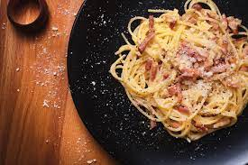

Carbonara

Classic Carbonara
This is the most classic carbonara recipe that can be made. It is made with
five simple ingredients!
1 Egg
Pepper
Bacon
Spaghetti Pasta
Pecorino Romano
Steps
Boil a pot of water and cook the pasta for 12 minutes
While the pasta cooks, set a pan to medium heat and cook 1/4" slices of bacon
Once bacon has turned a crispy brown, turn off the stove and wait for it to stop frying
The second you can no longer here frying, add your egg and pasta and mix well
Add pecorino romano and pepper and enjoy!